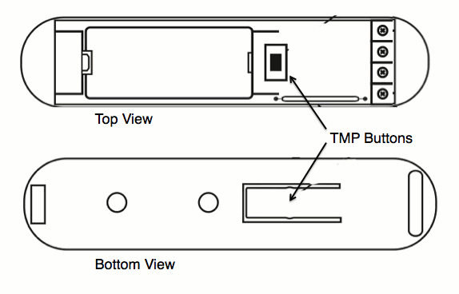

FIBARO Z-Wave Door/Window Sensor¶
Overview¶
- Door sensor can detect closing and opening of any door/window or garage door openings. Door Sensor can also be paired with DS18B20 to input temperature sensor.
- The Door / Window Sensor has a unique feature in which it can automatically trigger pre-programmed scenes. (may require compatible controller)
- The Door/Window Sensor is extremely compact and is the smallest unit of this type available on the market. Its extremely lightweight and thin design makes it almost invisible on any door/window.
- The Fibaro Door / Window Sensor is available in seven colors. Select the best color match to your home interior designs and enjoy the undisturbed beauty, security and comfort.
- Z-Wave Certifed Sensor: Cert ID: ZC08-14070006/ Frequency Region: U.S./Canada/Mexico, Z-Wave Library Version: 4.55.06
Specification¶
- Battery: single ER14250 (1/2 AA), 3.6V
- Supported temoerature sensor: single, DS18B20
- Operating temperature: 0-40 Celcius
- Z-wave frequency: 868,4 MHz EU; 908,4 MHz US; 921,4 MHz AU/NZ; 869,2 MHz RU
- Range: Up to 30m indoor
Inclusion/Exclusion to/from a network¶

- Put controller to Inclusion/Exclusion mode
- Tripple press TMP button
- Wait for Venus/Titan confirm
- Tripple press TMP button again
- Wait for controller completes inclusion/exclusion process
Configuration description¶
- Alarm cancellation delay
- Paramter: 1 (0x01)
- Size: 2 bytes
- Value: 0 ~ 65535 in seconds
- Default: 0
- Device’s status change signalled by LED
Paramter: 2 (0x02)
Size: 1 bytes
- Value:
0 - LED turned Off, 1 - LED turned On.
Default: 1
- IN input type
Paramter: 3 (0x03)
Size: 1 bytes
- Value:
0 – INPUT_NC (Normal Close) 1 – INPUT_NO (Normal Open) 2 – INPUT_MONOSTABLE 3 – INPUT_BISTABLE
Default: 0
- Association control frame
Paramter: 5 (0x05)
Size: 1 bytes
- Value:
0 – ALARM GENERIC frame 1 – ALARM SMOKE frame 2 – ALARM CO frame 3 – ALARM CO2 frame 4 – ALARM HEAT frame 5 – ALARM WATER frame 255 – Control frame BASIC_SET
Default: 255
- Trigger signal level to associated devices
Paramter: 7 (0x07)
Size: 1 bytes
- Value:
1 ~ 99: dim level 255: turn to last memorized dim level
Default: 255
- Alarm cancel transmission
Paramter: 9 (0x09)
Size: 1 bytes
- Value:
0 – for association group no. 1 information is sent 1 – for association group no. 1 information is not sent.
Default: 0
- Temperature change report
Paramter: 12 (0x0C)
Size: 1 bytes
- Value:
0 – 255 [0oC to 16oC] [32oF – 60,8oF]
Default: 8 (0.5 oC)
- Broadcast alarm control frame
Paramter: 13 (0x0D)
Size: 1 bytes
- Value:
0 – IN and TMP Broadcast mode inactive, 1 – IN broadcast mode active, TMP broadcast mode inactive 2 – IN broadcast mode inactive, TMP broadcast mode active 3 – IN and TMP broadcast mode active
Default: 0